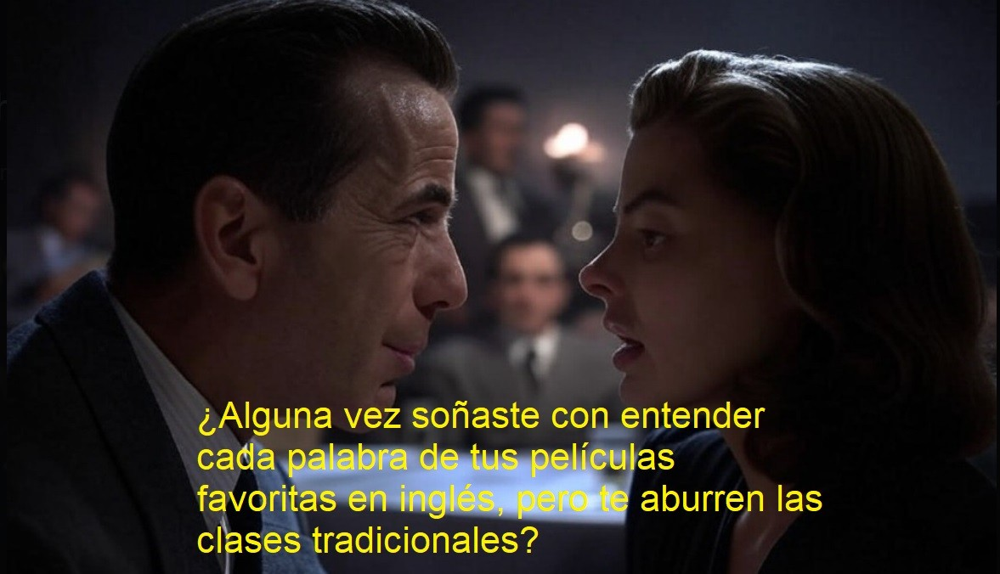

🎬🗣️: Tu Aventura Cinematográfica en Inglés está por Comenzar.
¡Prepárate para una experiencia única! En este taller, no solo aprenderás inglés, sino que vivirás el idioma a través de las películas. Olvídate de los libros de texto polvorientos y las listas de verbos interminables. Aquí, cada personaje será tu profesor, los guiones, tus lecciones más emocionantes, y nosotros, seremos tu guía en esta extraordinaria aventura.
¿Te imaginas aprendiendo inglés mientras te emocionas con los dramas, te ríes con las comedias y te sorprendes con los giros inesperados del cine?
¿Qué te espera en esta aventura?
Diálogos que te llegan al corazón: Nos sumergiremos en escenas icónicas, llenas de pasión, humor, tristeza y todas esas emociones que nos hacen humanos. Analizaremos diálogos cortos pero poderosos, perfectos para aprender.
¡Tú eres la estrella! Dejarás de ser un espectador pasivo para convertirte en el protagonista. Desarrollando los diálogos, te meterás en la piel de los personajes y le darás vida a las escenas.